Freelancer System Editor — Manual
This manual walks you through the editor by doing real jobs: building a system, adding a base, reworking a defence grid, writing a side mission and shipping the result to players. Every screenshot is from the editor itself, running on the vanilla game.
For a complete list of what every panel, dialog and menu entry does, see the reference guide (F1 in the editor). This manual is the “how do I…” companion to it.
Getting started
Two ways to run it
| In VS Code | Install freelancer-system-editor-1.17.0.vsix (Extensions → ⋯ → ), then run from the command palette. The editor opens in a tab; right-click a system .ini and choose to jump straight to it. |
|---|---|
| In a browser | Double-click start.bat in the editor folder. It starts a small local server and opens the editor in your browser. Close that window to stop it. |
Choose your game folder
- The editor looks for
Freelancer HD Editionnext to its own folder. If it finds no game, the Freelancer game folder dialog opens; otherwise use . - Click Browse… and pick the folder that contains
DATAandEXE. PickingDATAorEXEitself works too; the editor moves up to the game folder. The dialog tells you straight away whether Freelancer was found there. - Click Use this folder. In VS Code the choice is remembered in the extension settings.
The screen

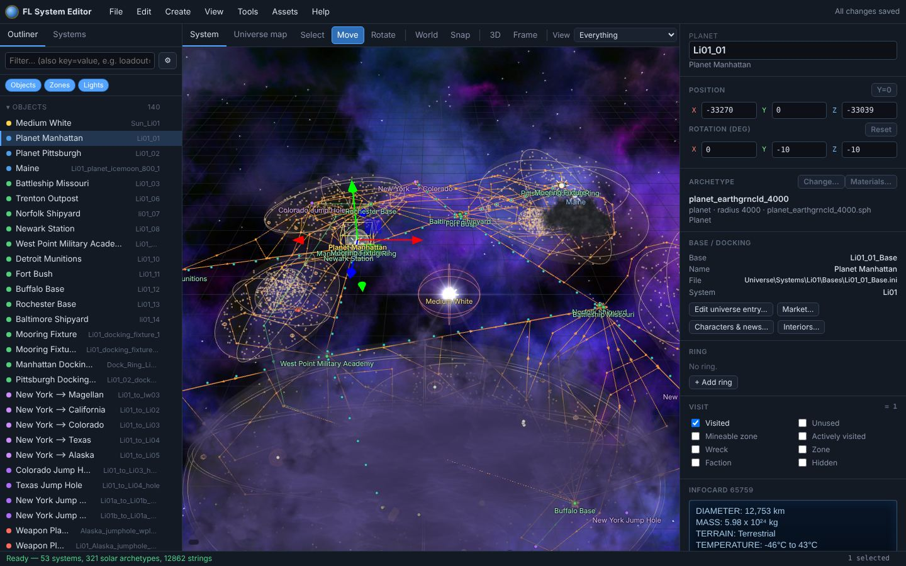
- Outliner (left): every object, zone and light in the open system. Search box on top, Objects / Zones / Lights chips to filter, ⚙ for more filters. The Systems tab switches between systems.
- 3D view (centre): the system as the game builds it — models, zones, trade lanes, patrol paths, asteroid fields and nebulae. The Universe map tab shows the whole sector.
- Toolbar (above the 3D view): Select / Move / Rotate gizmo, World or Local axes, Snap, 3D or Top view, Frame, and the View preset.
- Properties (right): what you selected — position, rotation, archetype, base and docking, visit flags, infocard and every INI entry. With nothing selected it shows the system itself (music, background, ambient light…).
- Status bar (bottom): what happened last, the cursor position in game metres, and how many items are selected. “All changes saved” in the top right turns into a list of unsaved files when you edit.
Moving around & selecting
| Look around | Left-drag orbits, right- or middle-drag pans, the wheel zooms towards the cursor. Click the 3D view once, then fly with WASD (Q/E down/up, Shift faster). |
|---|---|
| Find something | Type part of a name or nickname in the Outliner, or search INI entries with key=value (for example loadout=li_). Double-click a row (or press F) to fly to it; Home frames the whole system. Ctrl+F searches all systems. |
| Select | Click in the 3D view or the Outliner. Shift/Ctrl+click adds to the selection; Ctrl+A selects everything visible; does what it says. |
| Move and rotate | Drag the arrows (G) or rings (R) of the gizmo, or type numbers in Properties. Snap rounds to 100 m / 15° (change in ). Y=0 puts the object on the system plane, where the navmap shows it. |
| Top view | T switches to a flat view from above — the same picture as the in-game navmap, with its grid letters and numbers if you turn on . |
Showing what you need
A busy system like New York has over 500 objects and zones. Three tools keep the view readable.
What the 3D view draws: eyes and views
The Outliner on the left is also the switchboard for the 3D view. It works like layers in an image editor, on three levels, and every level has an eye:
| Kind | Objects, Zones, Light sources. |
|---|---|
| Category | Objects: Suns & planets, Stations & docking, Jump gates & holes, Trade lanes, Platforms & satellites, Other objects. Zones: Asteroid fields, Nebulae, Encounter zones, Patrol & trade paths, Exclusion zones, Death zones, Other zones. |
| Item | One object, zone or light (a trade lane row counts as one item). |
An item is drawn when its kind, its category and the item itself are all switched on. Kinds and categories apply in every system; item eyes are remembered per system. Nothing is ever written to the game files.

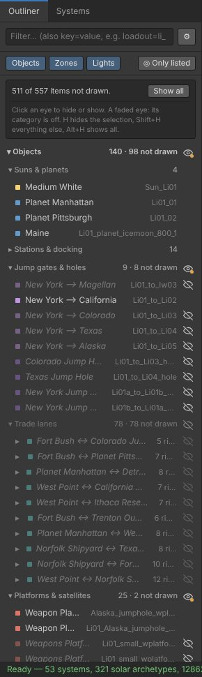
| Eye (on hover) | Drawn. Click to hide it. |
|---|---|
| Crossed-out eye | Switched off at this level. Click to switch it on again. |
| Faded crossed-out eye | On at this level, but a level above is off (e.g. the category). Click it to show only this one from that category — the category is switched on and its other items are hidden one by one. |
| Eye with a dot | Switched on, but some items inside are hidden one by one. Click to show them again. |
Every eye says what it will do when you point at it. When anything is not drawn, a box at the top of the Outliner counts it, with Show all.
Shortcuts (as in Blender): H hides the selection, Shift+H hides everything except the selection, Alt+H shows everything again. A hidden zone or light that you select is still drawn so you can find it; a hidden object keeps its yellow selection box.
◎ Only listed (next to Objects / Zones / Lights) makes the 3D view draw only what the list shows. Combine it with the search box or the ⚙ filters: for one faction, open ⚙, pick the faction, then click ◎ Only listed.
Views
The View dropdown at the right end of the toolbar sets the kind and category eyes in one go (plus labels, paths and grids). Tick one view, or several to combine them — the combination shows everything any of the ticked views shows. Standard, Everything and Clean are single choices. Item eyes are not touched by views.
| Standard | The default: everything except patrol paths, encounter zones and other zones, which clutter most systems. |
|---|---|
| Everything | Every kind and category on. |
| Bases, lanes & jumps | Suns, planets, stations, trade lanes, gates and holes. No zones. |
| Zones | Every zone category with labels, plus suns and planets to find your way. |
| Encounters & patrols | Encounter zones and patrol/trade paths, with the stations and gates they connect. |
| Defences | Weapons platforms, depots and the stations they guard. |
| Fields & hazards | Asteroid fields, nebulae, death and exclusion zones. |
| Clean (screenshots) | Only models and the backdrop — no labels, zones, paths or grid. |

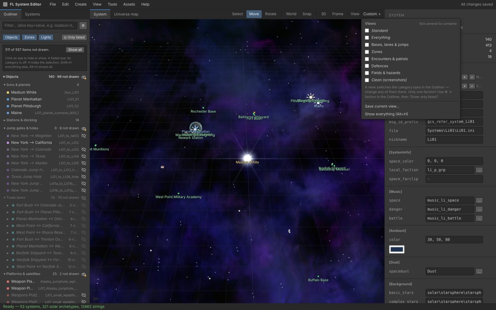
When you click a category eye yourself, the toolbar shows Custom. Save current view… keeps the current eyes, labels and grids as a view of your own; Manage saved views… renames, updates or deletes them.
The View menu
Fine control over what is drawn: models, particle effects, 3D fields, planet rings, sun flares, paths, nebula fog, starsphere, grids and labels (L cycles important / all / none). picks which kinds of zone are shown.
Saving safely
- Edits stay in the editor until you press Ctrl+S (). Ctrl+Z / Ctrl+Y undo and redo everything, including wizards.
- Before a file is written for the first time in a session, the original is copied to
editor_backups\<session time>in the game folder; lists them. - shows every file you changed compared with the original — INI files line by line with the section and nickname, DLLs by string and infocard. Restore original puts a single file back.
- keeps a named copy of everything you have changed so far (“before the Navy rework”). Restore makes your files match it again; a “Before restoring” snapshot is taken automatically, so even that can be undone.
- Close Freelancer before saving — Windows locks files the game has open, and the editor tells you if that happens.
Walkthrough 1 · A new system
Goal: a new Liberty system with a sun, three planets, a station you can dock at, a jump gate to Colorado, a trade lane and NPC traffic.

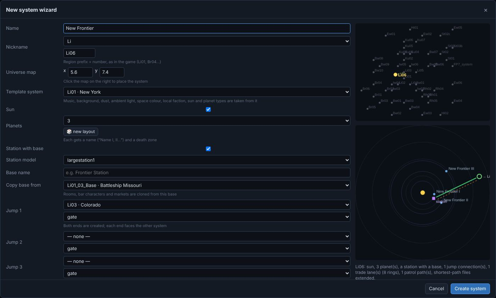
- Open .
- Name is what players see (“New Frontier”). Nickname is the region prefix plus the next free number; the wizard suggests one (Li06).
- Click the small universe map at the top right to place the system on the sector map.
- Template system decides the look and sound: music, background, dust, ambient light, space colour, local faction, and which sun and planet models are used. Pick a system that feels like the one you want.
- Choose the number of planets; 🎲 new layout rolls a different arrangement until you like the preview. Each planet gets a name and a death zone.
- Keep Station with base ticked, give the base a name and choose Copy base from: rooms, bar characters and markets are cloned from that base, so it works in game straight away.
- Under Jump 1 pick the system to connect to and gate or hole. Both ends are created, each facing the other system. Add up to three connections.
- Click Create system, look around, then press Ctrl+S to write all files.

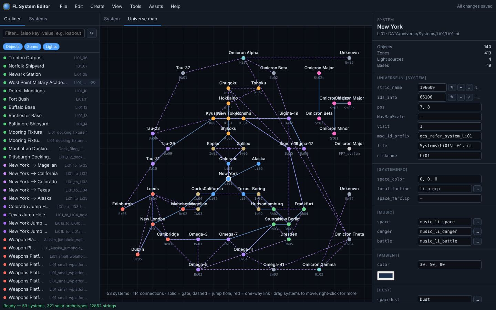
Afterwards
- Routes. The wizard extends the shortest-path files, so NPCs and the navmap can plot routes through the new system. checks them for every system and adds what is missing.
- Check. lists problems in the open system; Pre-flight checks the whole mod.
- Fine-tune. Everything the wizard made is ordinary objects and zones: move planets, add lanes () or draw zones (Z).
Walkthrough 2 · A base with a market
Goal: make the moon Maine in New York dockable, sell goods there, give it an infocard and fill its bar.
Make it a base

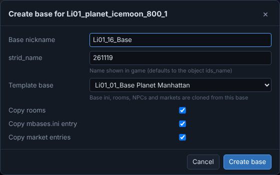
- Select Maine in the Outliner and open .
- The Base nickname and strid_name are filled in for you (the name defaults to the object's own name).
- Choose a Template base. Its base INI, rooms, bar characters and market are copied — untick what you don't want.
- Click Create base. The object gets
baseanddock_with, and the base appears inuniverse.ini.
What the market sells

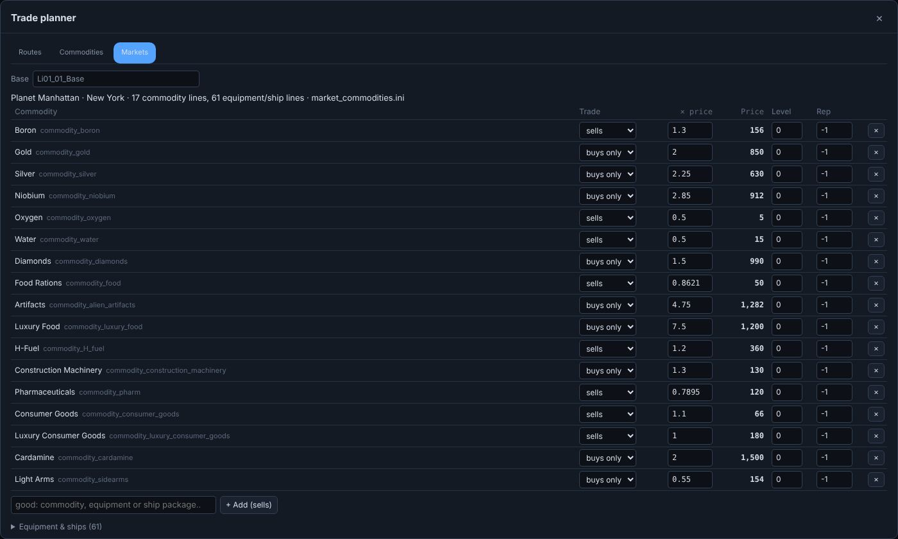
- Select the object and click Market… in Properties.
- Trade: sells means players can buy it here, buys only means the base only takes it. × price multiplies the goods.ini price; Price shows the result. Level and Rep lock items behind player level or reputation.
- Type a good's name at the bottom and click + Add. Equipment and ships are in the Equipment & ships section below the commodities.
- The Routes tab of the same window shows at once whether your prices create a good (or absurd) trade run.
Its infocard

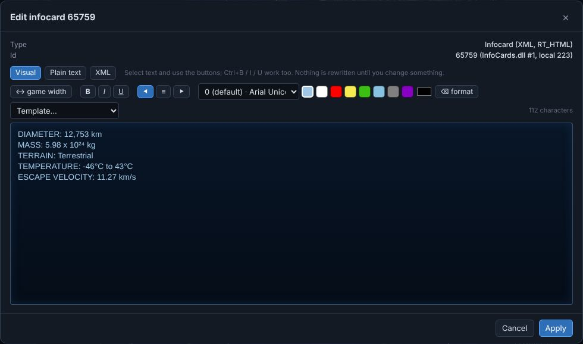
- In Properties, next to
ids_info, click ✎ to edit the text or + to create a new infocard. - Type directly. Select text and use B / I / U, the font list and the colour swatches; Ctrl+B/I/U work too.
- Template… starts from a station or planet card (CLASS, GRAVITY, DOCKING…). Ctrl+Z brings your text back if you change your mind.
- ↔ game width narrows the editor to the in-game panel so you see where lines wrap. Apply stores it in the DLL; Ctrl+S writes the DLL file.
The bar

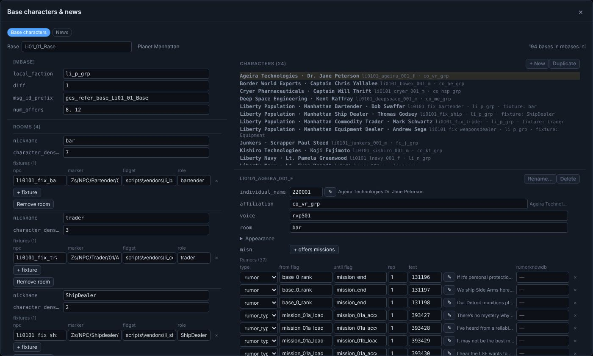
- Base characters: the rooms of the base, the fixed NPCs (bartender, dealers) and every bar character with faction, voice, appearance and rumours. + New or Duplicate adds one.
- News: the news items shown at this base, with the story progress that shows and hides them.
- edits the rooms themselves (scenes, hotspots, fixtures) with a 3D view of the room.
Walkthrough 3 · A defence grid in bulk
Goal: hand all weapons platforms around a station to another faction, give them a heavier loadout, put them in a ring and number them neatly.

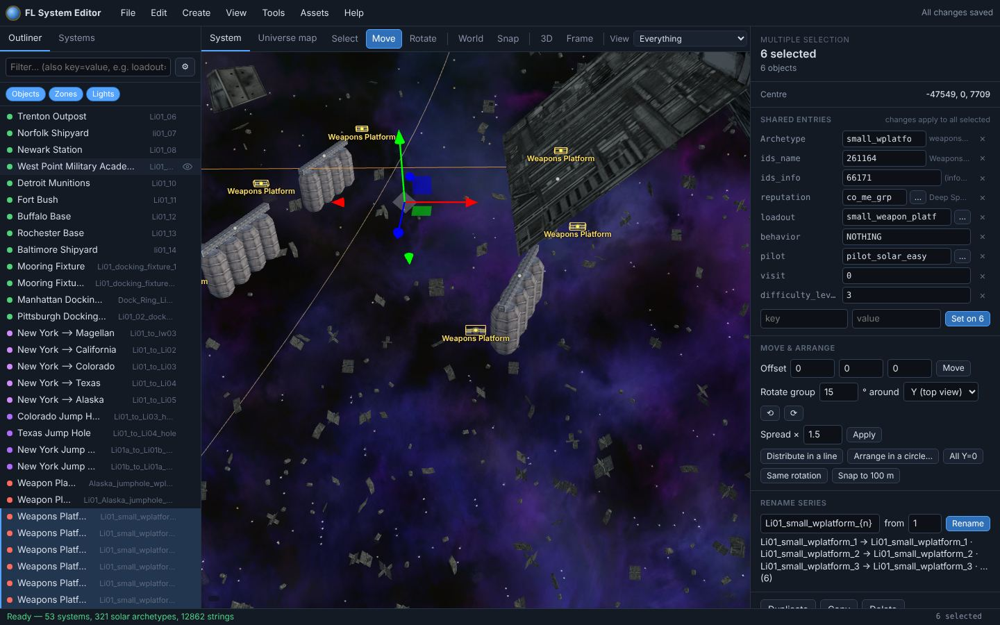
- Select the platforms: switch the View to Defences and Shift+click them, or select one and use .
- Shared entries lists every entry the selected items have. A value shown normally is the same on all of them; mixed · 3 values means they differ (hover to see the values), and 4/6 means only some have the entry.
- Type a new
reputation(or use … to search factions) — it is set on all six at once. Do the same forloadout. × removes an entry from all; the row at the bottom adds a new entry to all. - Move & arrange:
- Offset moves the group by exact metres.
- Rotate group turns the whole group around its centre — positions and orientations — by the angle you type, around Y (as seen on the navmap), X or Z.
- Spread × pushes everything away from the centre (1.5) or pulls it in (0.5).
- Distribute in a line spaces items evenly between the two farthest apart; Arrange in a circle… puts them on a ring of the radius you choose.
- Same rotation copies the orientation of the item you selected last; Snap rounds positions to the snap step.
- Rename series: the editor guesses a pattern such as
Li01_wplatform_{n:2}({n:2}= 01, 02…). The line below shows the result before you click Rename. References in the system (docking, parents, trade lanes) and jump connections in other systems follow the new names; use References… for missions and other files. - Every action is one undo step. Press Ctrl+S when you are happy.
Walkthrough 4 · A side mission
Goal: a job that starts when the player launches from Planet Manhattan — destroy three pirates near the California jump gate for 5,000 credits.

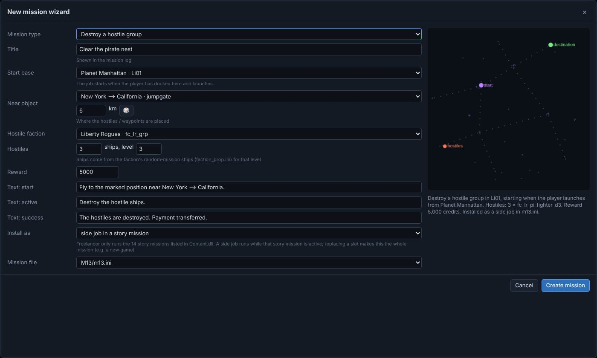
- Choose the Mission type: destroy a hostile group, escort a transport, patrol waypoints or courier a package.
- Pick the Start base; the job starts when the player has docked there and launches.
- Near object and the distance place the action; 🎲 tries another spot nearby.
- Choose the Hostile faction, the number of ships and their level. Ships come from that faction's random-mission ships for the level — the summary under the map names the ship it picked.
- Set the reward and check the three texts (start, active, success) the player will read.
- Install as: side job in a story mission runs alongside that story mission; replace a story mission slot makes this the whole mission (for example of a new game). Freelancer only runs the 14 story missions listed in Content.dll, so a new mission always lives in one of their files.
- Click Create mission, then Ctrl+S.
Fine-tune it in 3D

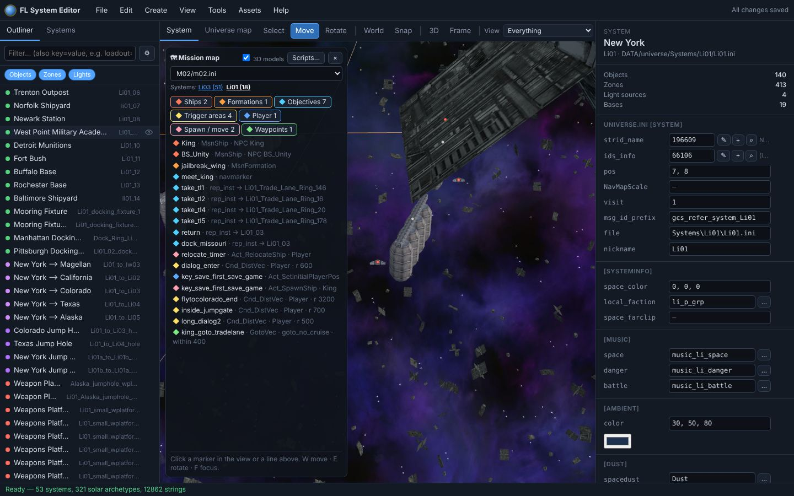
- Every ship, formation, waypoint and trigger area of the mission file is listed on the left and drawn in the system. Select one and drag it with the gizmo, or click Place by click.
- shows the triggers, conditions and actions behind it if you want to go further.
- To try it: start a new game (or load a save before that story mission), dock at the start base and launch.
Walkthrough 5 · Check and ship your mod
Pre-flight

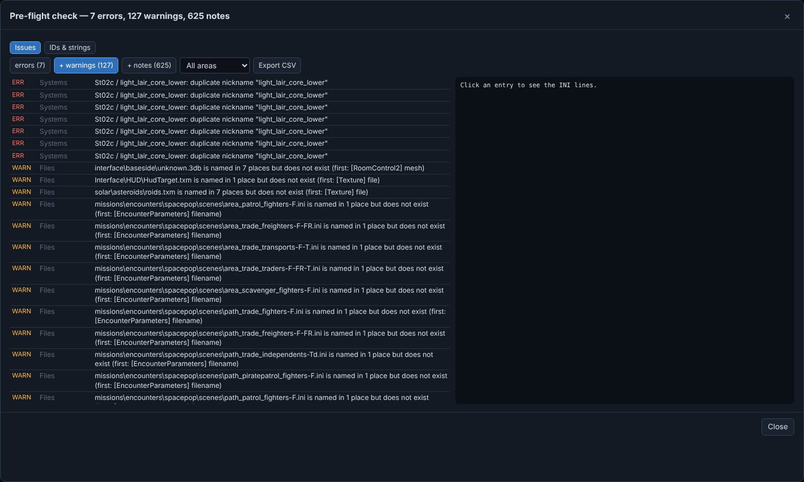
- Pre-flight reads every system, base, market, mission, ship, equipment entry and resource DLL and reports what would crash or misbehave: missing files, unknown nicknames, ids without text, duplicate nicknames.
- errors can crash or break the game, warnings usually show up as something missing, notes are worth a look. Click an entry to see the INI lines; Export CSV for a list to work through.
See it in the game

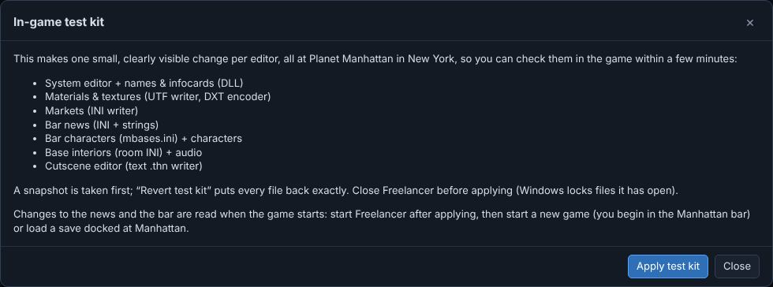
- (F5) writes a single-player save that starts in space next to the selected object, with the ship, money and rank you choose, and can start Freelancer. In the game: Load Game → the save whose name starts with “Playtest”.
- The in-game test kit makes one small, visible change per editor at Planet Manhattan (name, texture, market, news, bar, room, cutscene) so you can confirm in a few minutes that everything the editor writes works in your copy of the game. A snapshot is taken first; Revert test kit undoes it exactly.
Package it

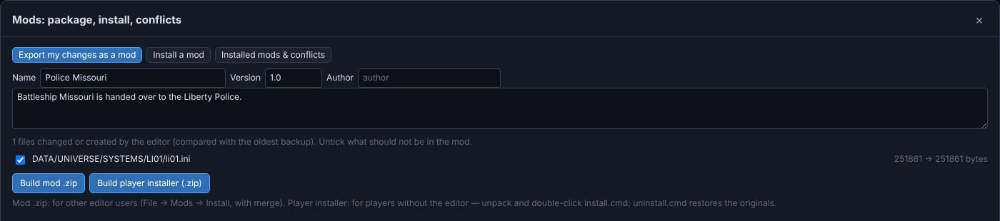
- Open . Export my changes as a mod lists every file you changed or created, compared with the original backups.
- Fill in name, version, author and a short description; untick files that don't belong in the mod.
- Build mod .zip is for other editor users: they install it with Install a mod, which merges it with their own changes and shows conflicts side by side.
- Build player installer (.zip) is for players without the editor: they unpack it and double-click
install.cmd. It checks the game version, backs up every file it replaces and stops cleanly if anything fails;uninstall.cmdputs the originals back.

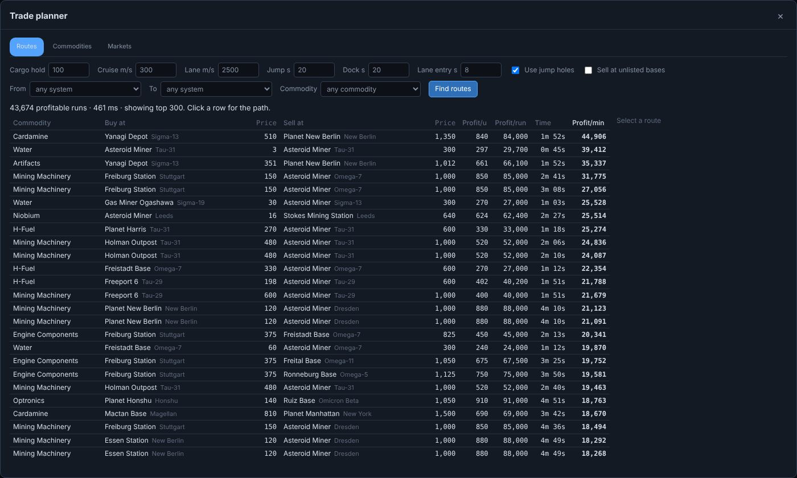
Discovery & other big mods
Everything in this manual works on Discovery Freelancer as well. With a mod that size:
- Map labels. “Sector” entries in
universe.iniwithout a system file are only names on the navmap. They are greyed out in the Systems list and skipped by validation and the route tools. - Speed. Over 130 systems take a few seconds to load all at once; the trade planner works through more than two million runs in a few seconds and shows the best 300. Use view presets and eye buttons to keep busy systems readable.
- Their conventions are kept. Discovery's market notation, NPC level names and infocard style are read and written the way the mod uses them, so your edits blend in.
- Updates. Discovery updates replace its files. Switch on the update patch before you start editing, and your changes can be put back after every update.
- Pre-flight also reports files the mod itself references but does not ship. Compare the list before and after your changes instead of trying to reach zero.
Keeping your changes across mod updates
A mod update — a new Discovery version, say — replaces the mod's files, and your edits in them are gone. The update patch keeps them safe. It is off until you switch it on.
- Open , tab Update patch, and tick Keep an update patch of my changes.
- Work as usual. Every Ctrl+S also writes
editor_patches\my-changes.flpatch.jsonin the game folder: not whole files but each change on its own — “Li01 · Li01_03 · reputation li_n_grp → li_p_grp”, a new object, a market price, an infocard text. The last ten versions are kept ineditor_patches\history. - Install the mod update as usual (the editor can stay closed).
- Start the editor. It notices that files with your changes were replaced and offers .
- The re-apply window sorts every change: apply (the update did not touch that spot), already there, decide (the update changed the same thing — you see what it was, what the update has, and yours; pick use mine or keep this version's), and cannot (for example a file the new version no longer has).
- Leave start a new baseline ticked: the old backups move to
editor_backups_old, so Review changes, mod export and the next patch compare with the new version. Click Apply, look around, then Ctrl+S.

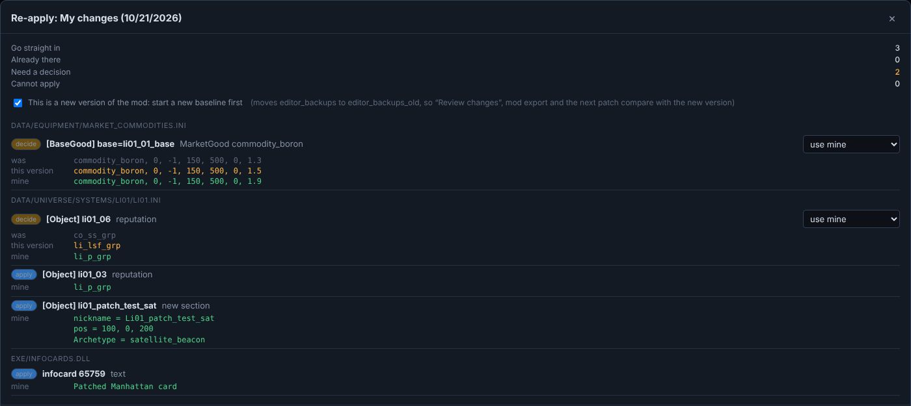
Keyboard & mouse
| Left drag · right/middle drag · wheel | Orbit · pan · zoom to cursor |
|---|---|
| WASD QE (+Shift) | Fly (click the view first) |
| Click · Shift+click · double-click | Select · add to selection · fly to it |
| G · R · V · X | Move gizmo · rotate gizmo · select only · world/local axes |
| T · F · Home · L | Top view · focus selection · frame all · cycle labels |
| Ctrl+Z / Y · Ctrl+S | Undo / redo · save all |
| Ctrl+C / V / D · Del | Copy / paste (also between systems) / duplicate · delete |
| Ctrl+A · Ctrl+F | Select all visible · find in all systems |
| Shift+A · Z | Add object · draw a zone |
| Ctrl+I · Ctrl+B · Ctrl+M | Strings & infocards · base characters & news · trade planner |
| Right-click | Context menu (add here, paste here…) |
| F1 | Reference guide |
When something goes wrong
| The game crashes after my change | reads the game's log or a crash report and names the function that crashed and the kind of data it handles (loadouts, systems, effects…). Then or a snapshot to go back. |
|---|---|
| A change doesn't show in the game | Did you save (Ctrl+S)? Bars and news are read when the game starts — restart Freelancer. Run Pre-flight for missing ids or nicknames. |
| “File is in use” when saving | Close Freelancer (and FLServer) and save again. |
| A “3D view problem” message appears in the status bar | One model or texture could not be drawn; the rest of the view keeps working. Hide that object with its eye button if it is in the way, and note the system and object when you report it. |
| The editor is slow | Turn off or while you edit layouts; use a view preset to draw less. |
More answers in the reference guide.